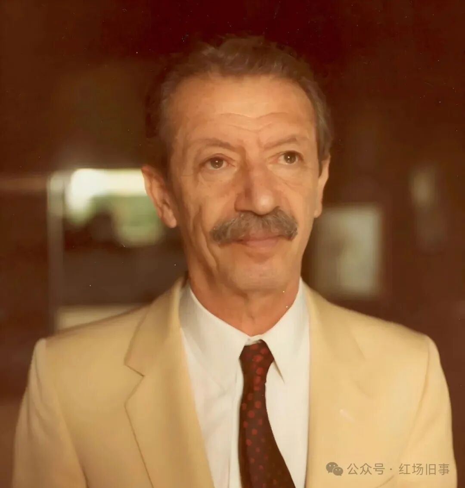
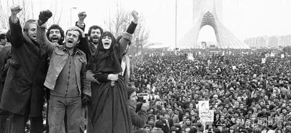
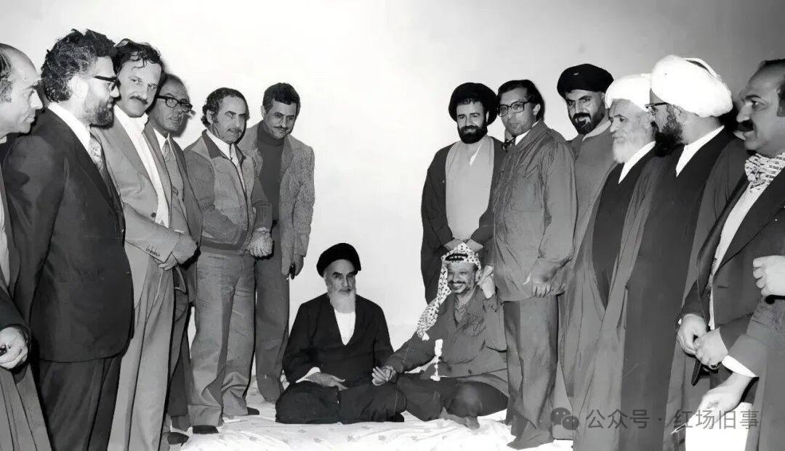
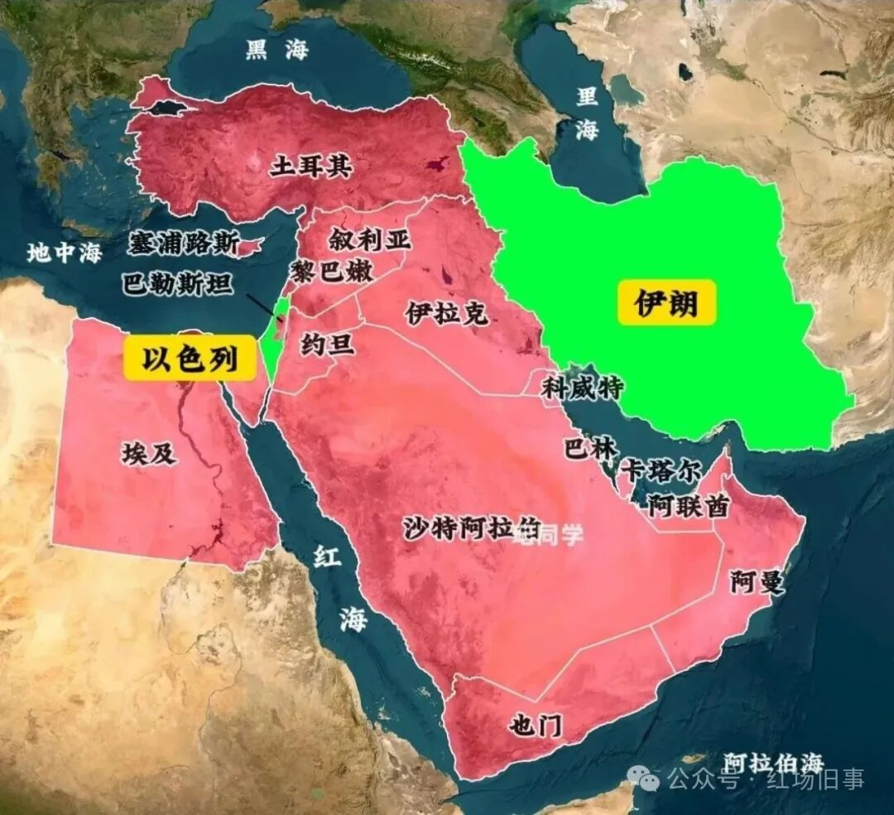

1979年2月17日，德黑兰。一群年轻人冲进以色列驻伊朗大使馆。他们没有砸窗户，没有烧文件，而是做了一件史无前例的事——把一块新牌子挂在了大门上。牌子上写着：“巴勒斯坦解放组织驻伊朗代表处”。这是全球唯一一个将外国使馆移交给巴解组织的国家。那个曾与以色列称兄道弟三十年的波斯王朝，在革命后的第16天，完成了对“小撒旦”的彻底决裂。更戏剧性的是，亲手接过使馆钥匙的人，正站在门口微笑挥手——亚西尔·阿拉法特。
一、最后的告别
1979年1月16日，巴列维国王仓皇出逃。德黑兰的街头，数百万人的欢呼声中，一小群以色列外交官正在大使馆内紧急焚烧文件。他们原本以为这只是暂时的混乱。毕竟，过去的三十年里，他们在这里过得如鱼得水：以色列工程师为德黑兰设计下水道，摩萨德教官帮伊朗训练“萨瓦克”，两国军官在美国的培训基地里称兄道弟。但这一次，情况不一样。1月28日，伊朗临时政府总理巴赫蒂亚尔召见了摩萨德驻德黑兰站长查弗里尔。巴赫蒂亚尔提出一个令人震惊的请求：以色列能否在巴黎暗杀霍梅尼？

查弗里尔将这一请求传回特拉维夫。摩萨德局长霍菲召集高层紧急会议。争论持续数小时，最终霍菲拍板：“我们拒绝。”理由有三：•道德原则不允许暗杀外国政治领袖；•担心行动失败引发国际反弹；•更重要的是，情报官员们相信——“霍梅尼不会长久，军队和萨瓦克会对付他”。两周后，这个判断被证明是灾难性的错误。
二、霍梅尼归来
1979年2月1日，一架法航专机降落在德黑兰梅赫拉巴德机场。霍梅尼走出舱门，数百万伊朗人高呼“霍梅尼万岁”。

新政权迅速清算旧势力。“萨瓦克”最后一任局长纳赛尔·莫加达姆几周后被处决，巴赫蒂亚尔逃往巴黎（1991年被伊朗特工暗杀）。而那些曾与以色列合作的军官，有的被处决，有的流亡海外。霍梅尼给世界重新划定了敌人：美国是“大撒旦”，以色列是“小撒旦”。他宣称以色列是美国安插在伊斯兰世界的“毒瘤”，必须被消灭。2月11日，伊朗军方宣布中立，伊斯兰革命正式胜利。五天后，一个改变历史的客人抵达德黑兰。
三、阿拉法特的胜利日
1979年2月17日，阿拉法特降落在德黑兰。他是革命后首位访问伊朗的外国领导人。

霍梅尼破例接见了他。一向面容冷峻的阿亚图拉，在与阿拉法特会面的照片中罕见地露出了笑容。阿拉法特当场宣布：“通往巴勒斯坦的道路现在经过德黑兰。”最震撼的一幕发生在以色列大使馆门前。阿拉法特亲手接过使馆钥匙，把它交给了巴解组织驻伊朗代表哈桑。那块写着希伯来语的牌子被摘下，换上了巴解组织的旗帜。消息传到特拉维夫，以色列外长达扬正在前往美国的飞机上。他只能无奈地对记者说：“这是意料之中的。”但真的意料之中吗？
四、新秩序的诞生
移交使馆只是开始。新政权将反对犹太复国主义写入宪法第152条。霍梅尼宣布每年斋月最后一个周五为“耶路撒冷日”，号召全球穆斯林在这一天声援巴勒斯坦。为什么一个刚刚建立的政权，要把反以作为头等大事？这里有精密的算计：巴列维时代与以色列结盟，是伊朗被阿拉伯世界孤立的根源之一。霍梅尼要打破这种孤立，就必须抢占巴勒斯坦这面旗帜。支持巴勒斯坦，成为伊朗融入伊斯兰世界、争夺话语权的“抓手”。

从此，反对以色列不再是外交选择，而是宗教义务。
五、悬疑：摩萨德为何毫无准备？
回过头看，最大的疑点是：摩萨德为何对这场巨变毫无准备？答案藏在以色列的“边缘政策”里。三十年来，以色列与伊朗的情报合作深入骨髓。摩萨德前局长阿米特曾亲赴1971年波斯波利斯庆典，作为以色列使节出席。情报共享如此频繁，以至于以色列情报官员“觉得自己像了解手心一样了解伊朗”。但恰恰是这种亲密，成了最大的盲点。摩萨德长期只盯着国家层面的合作，完全忽视了霍梅尼的软实力。当数百万盘霍梅尼的布道录音带从巴黎流入伊朗时，摩萨德没有人在听。当德黑兰街头的示威人群高呼反美口号时，摩萨德相信军队能镇压一切。1979年2月的那个夜晚，当霍菲拒绝巴赫蒂亚尔的请求时，他曾说：“我们不能扮演世界警察。”这句话在日后被反复提起，成为一个时代的遗憾。
下期预告
伊朗伊斯兰革命卫队派遣1500名革命卫队成员进入黎巴嫩贝卡谷地，招募当地什叶派青年，组建真主党（Hezbollah）。真主党在黎巴嫩南部建立的“导弹长城”，为何成为以色列几十年的噩梦？下一集《真主党的诞生：德黑兰在黎巴嫩埋下的“定时炸弹”》，看看伊朗如何通过一个代理人组织，实现对以色列的“非对称威慑”？本文由红场旧事发布，2026年3月13日第17期 同时被希特勒和斯大林授勋的男人：“千面人”阿贝尔的传奇人生第15期 他是剑桥五杰之外最危险的间谍，普京亲自给他颁奖
文字与图片版权归各自权利人所有；排版根据抓取内容整理。